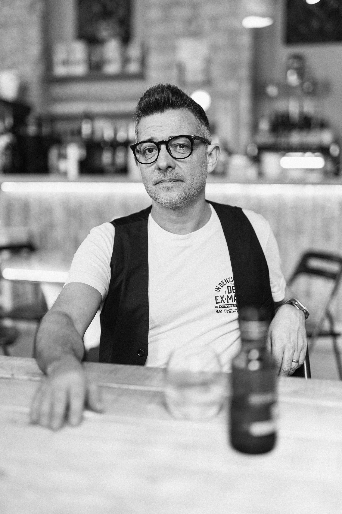

Nunca ha venido tanta gente a Alicante. Y nunca ha sido tan fácil facturar menos.
El supermercado de tu esquina ya vende comida buena, rápida y barata. Si tu restaurante solo vende comida buena, estás compitiendo contra Mercadona. Esa batalla la pierdes por precio. La que puedes ganar es otra: que la gente tenga un motivo para volver.
Segunda opinión · 15 minutos¿Te suena alguna de estas?
Nada de esto se arregla con más publicidad. Se arregla sabiendo primero qué está pasando de verdad.
¿Qué porcentaje de tus cubiertos repite?
La mayoría de restaurantes no lo sabe. Y es el número que decide el futuro del negocio, porque el turista de una vez paga el verano, pero la mesa que vuelve cada jueves paga el invierno. Todo mi trabajo empieza por medir ese número y entender por qué es el que es.
Tres cosas en las que creo (y que van a incomodar a alguien)
Al que vuelve no le impresiona el truco. Le impresiona que te acuerdes de él, de su mesa y de lo que toma. Primero, que nada falle nunca, esté quien esté en el turno. Después, un detalle pequeño, pensado y tuyo. En ese orden. Sorprender sin consistencia es ruido caro.
En Alicante hay turistas que vuelven cada año, las mismas semanas, al mismo apartamento, desde hace veinte años. Ese también es un habitual, y casi nadie lo trata como tal. Si él te reconoce cada julio y tú a él no, no has perdido un turista: has perdido un cliente fiel. Fidelizar no es una campaña para vecinos; es una forma de tratar a cualquiera que vuelve, venga de donde venga.
Todo el mundo tiene una lista de lo que ofrece. Casi nadie tiene una lista de lo que no: qué plato no entra en la carta aunque lo pidan, a qué cliente no persigues, qué no prometes. Elegir es renunciar, y el que no renuncia a nada acaba siendo la décima terraza igual de la misma calle.
Radiografía
Antes de tocar nada, miro tu restaurante como lo ve un cliente, no como lo ve el dueño.
- Tres visitas de cliente anónimo, en turnos y días distintos, con el mismo guion de observación.
- Diez conversaciones cara a cara con tus clientes habituales. Sin encuestas: conversaciones.
- Tus datos: cuánta gente repite, qué días cojeas, qué dice de ti un año de reseñas.
Al final recibes un informe con lo que está pasando de verdad y una recomendación honesta: seguir conmigo, seguir por tu cuenta, o no hacer nada porque el problema no es el que crees. Lo decides tú.
- Lo hacemos.
Montamos el suelo: lo que no puede fallar nunca, esté quien esté en el turno. Y el techo: los detalles que hacen que la gente hable de ti y vuelva. Con tu equipo, en tu sala, con números cada semana.
Para quien tiene varios locales y necesita que todos jueguen en la misma liga sin depender de un encargado estrella.
El precio de estos programas depende de lo que salga en la Radiografía. Se habla con números delante, no antes.

Soy Chema Bedmar.
Llevo 25 años trabajando en producto, marca e investigación de mercados para empresas que venden a personas exigentes, de Suavinex a la gran distribución. Vengo de familia de hostelería: he crecido viendo lo que pasa cuando un servicio se cae un sábado por la noche, y hoy asesoro a restaurantes que quieren dejar de depender de la suerte. Investigo a pie de calle: me siento en tu sala como un cliente más y hablo con la gente cara a cara. No soy una agencia, no te voy a mandar un becario y no te voy a decir lo que quieres oír.
Segunda opinión.
15 minutos.
Quince minutos por videollamada para contarme qué te preocupa y ver si tiene sentido que trabajemos juntos. No es una sesión de venta ni una auditoría gratis: si no te puedo ayudar, te lo digo y no te hago perder el tiempo.
Trabajo con un máximo de tres clientes al año. Si no hay hueco, te lo diré.